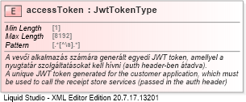

| Definition Type: | Element |
| Name: | accessToken |
| Namespace: | http://schemas.nav.gov.hu/EDOCUMENTSTORE/1.0/api |
| Type: | message:JwtTokenType |
| Containing Schema: | eDocumentStoreApi.xsd |
| MinOccurs | (1) |
| MaxOccurs | (1) |
| Abstract | |
| Documentation: | A vevői alkalmazás számára generált egyedi JWT token, amellyel a nyugtatár szolgáltatásokat kell hívni (auth header-ben átadva). A unique JWT token generated for the customer application, which must be used to call the receipt store services (passed in the auth header) |
|  |
|
|
|